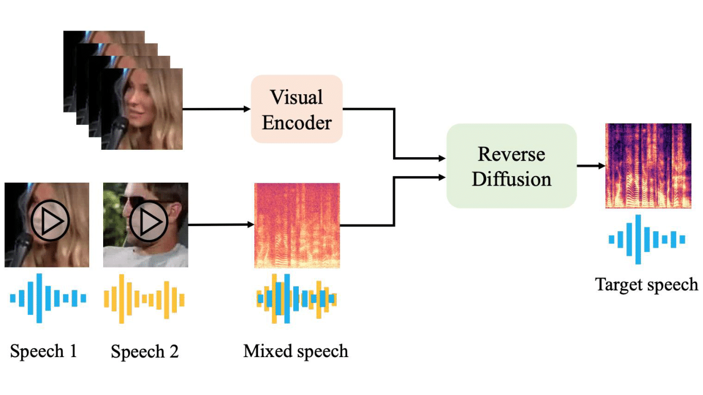

Publications
2024

Seeing Through the Conversation: Audio-Visual Speech Separation based on Diffusion Model
S. Lee*, C. Jung*, Y. Jang, J. H. Kim, and J. S. Chung
ICASSP
Paper Project Page Code
S. Lee*, C. Jung*, Y. Jang, J. H. Kim, and J. S. Chung
ICASSP
Paper Project Page Code